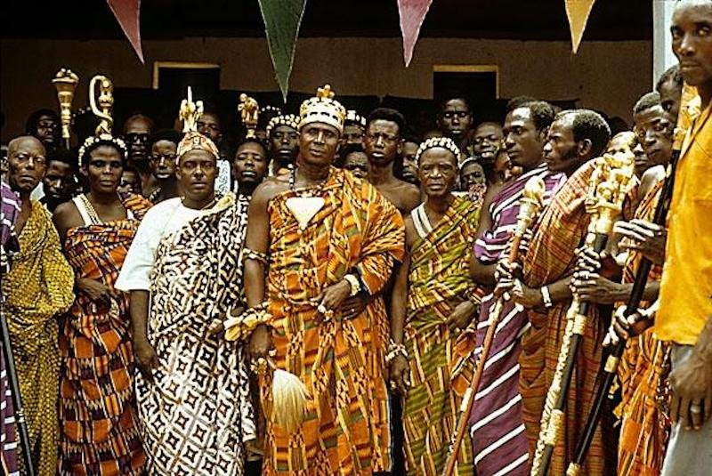

Introduction of the
Akan people

The Akan people are living in Ghana and in parts of Ivery Coast and Togo in West Africa. So to say, they are the ancient Ghanians.
A Bit of History
In the 12th century's gold boom brought wealth to numerous Akans.
Because of this they could rose to the well known Akan empire. Their
wealth did two major things: attracted European traders
and waged war with the neighboring states. The Akans captured their
enemys and sold them to the traders. In exchange of Akan gold and slaves
they got guns and slaves from the traders. The Akans needed the brought
slaves to clear out the dense forests within Ashanti.
Their cultural attributes are:
- tracing of matrilineal descent
- inheritance of property
- succession to high political office
You can read more about it here: